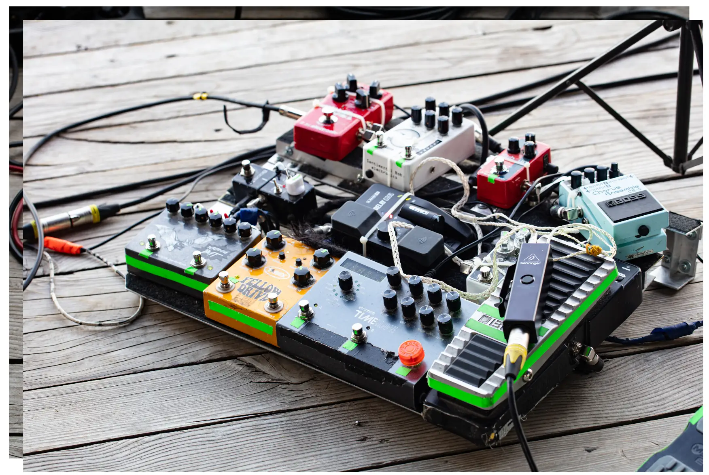

Unleash Mesmerizing, Heart-Pounding Sound Effects for Epic Impacts!
Add some spice and punch to your instruments and mix by adding sound effects
Audio or sound effects are one of the most exciting characteristics available to enhance, alter and affect the overall sound of an instrument or sound source.
Check out some of these sound effects pedals:
- Boss NS-2 Noise Suppressor Compact Pedal - link to come
- SONICAKE Modulation Guitar Effects Pedal 4 Mode of Chorus, Flanger, Phaser & Tremolo Digital Warped Dimension - link to come
- Joyo JF-14 American Sound Effects Pedal Amplifier Simulation with Voice Control - link to come
Hardware effects connected
For years musicians have been plugging hardware effects units into their guitars and other musical instrument to add a variation such as delay, reverb, distortion, flange etc… to their sound. The possibilities are practically endless and some musicians even link many of these sound effects together in series to create a mega composite effect.

Software effects
These days such hardware effect devices still exist. However, now musicians can enjoy either this method or they can experience the joy of using sound effects generated in software. The beauty of the software alternative is that generally you can get access to practically any type of effect without breaking the bank.

Use sound effects to enhance your overall music experience
This has been a small taste of the world of sound effects. They can add so much punch, excitement and variation to your sounds. I do hope you include them in your music.
I would love to hear from you and know where you are on your musical journey. I am keen to provide more information about the various options available and the fun experiences you can have when connecting music with computers and using technology in general.
Please send a message or leave a comment below so I can provide some more input into your journey.
Return to my Home page.
Disclaimer: I am an affiliate marketer and I earn from qualifying purchases that you make